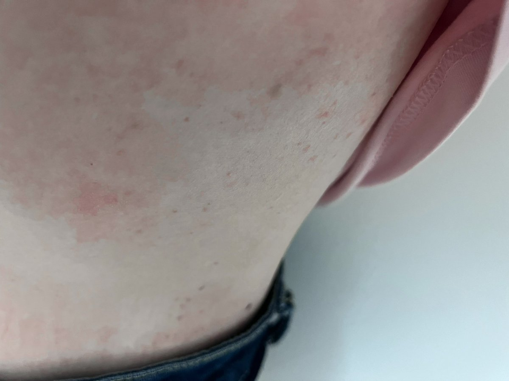

医生说我是晒太阳晒过敏的😂
我三点不涂防晒跑出去骑行一小时
然后就开始很痒起疹子 脸也痒 脸都晒红了
医生说我免疫力低 长期不晒太阳 突然晒太阳又出汗过敏了 还有点胆碱性寻麻疹
我以前在学校跑步也是很痒 我之前一直以为是我校服过敏 之前校医都给我涂炉甘石

我三点不涂防晒跑出去骑行一小时
然后就开始很痒起疹子 脸也痒 脸都晒红了
医生说我免疫力低 长期不晒太阳 突然晒太阳又出汗过敏了 还有点胆碱性寻麻疹
我以前在学校跑步也是很痒 我之前一直以为是我校服过敏 之前校医都给我涂炉甘石

这是什么 我不知道跟od有没有关系
我昨天只吃了阿普 文拉法辛 天麻素和一点加巴
我跑了两公里就浑身痒然后就发现了小红点
痒 是平面的小红点没有凸起
我可以确认不是艾滋梅毒等性病 我一个月前住院刚做了四项检查 今年我亲过嘴睡过的就一个人 而且是很久之前了 他也经常做检查没有性病 https://t.co/I4oDDQDmXT
我昨天只吃了阿普 文拉法辛 天麻素和一点加巴
我跑了两公里就浑身痒然后就发现了小红点
痒 是平面的小红点没有凸起
我可以确认不是艾滋梅毒等性病 我一个月前住院刚做了四项检查 今年我亲过嘴睡过的就一个人 而且是很久之前了 他也经常做检查没有性病 https://t.co/I4oDDQDmXT